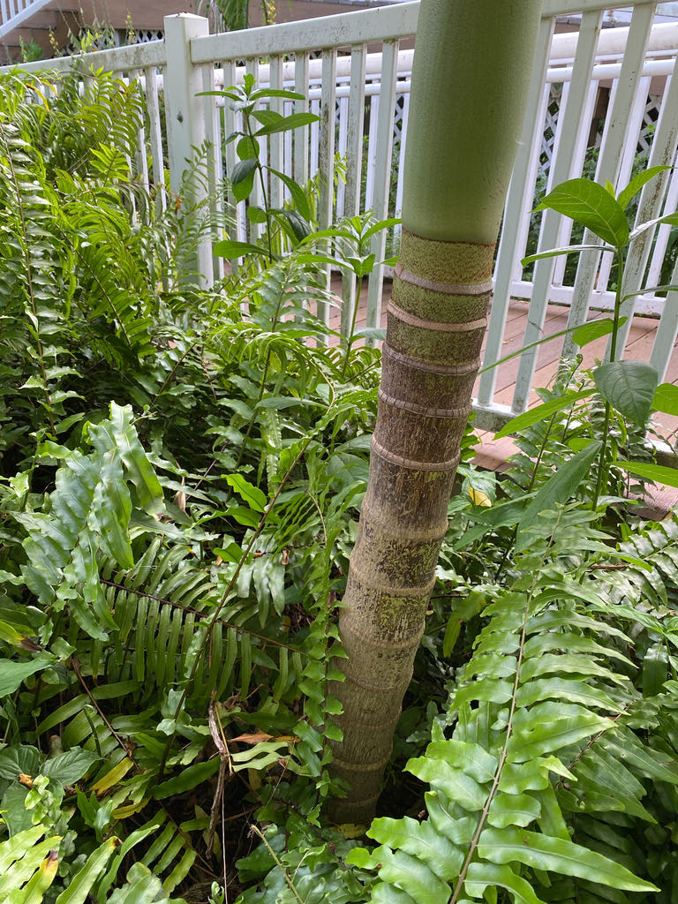

- The flowers of this palm are unmistakably lavender — a soft purple-pink that sets it apart from every other Archontophoenix species, all of which produce white or cream flowers. It is the only member of the genus with this trait.
- Both 'Bangalow' and 'Piccabeen' are words from Aboriginal languages of eastern Australia, each used by local peoples to refer to this palm. The name 'Bangalow' specifically comes from the Dharawal language and refers to a water-carrying basket: the crownshaft can be folded and tucked into a watertight vessel, with the petiole serving as the handle.
- Each frond carries a gentle half-twist along its length, so the leaflets at the outer tip rotate nearly vertical — a subtle but reliable field mark that helps distinguish this species from its close relative the Alexandra Palm (Archontophoenix alexandrae), whose fronds lie flat.
The Piccabeen Palm is endemic to the east coast of Australia, ranging from around Mount Elliot near Townsville in Queensland south through coastal and near-coastal areas to Bateman's Bay in southern New South Wales. In its home range it is a rainforest and wet-forest species, growing in colonies along stream banks, in gullies, and in swampy lowlands — wherever moisture is reliable.
It has been cultivated in warm-climate gardens worldwide since the 19th century and is now a well-established ornamental throughout central and southern Florida, valued for its fast growth, self-cleaning fronds, and graceful silhouette.
- In its native Queensland and New South Wales, this palm typically grows as a rainforest understory or edge tree, reaching up to 30 meters (about 98 feet) tall in ideal conditions. It tolerates deep shade when young — an adaptation to life beneath a forest canopy — but grows faster and develops a fuller crown in bright light as it matures.
- The fronds are notably self-cleaning: when a frond dies, the whole leaf detaches neatly at the crownshaft and drops to the ground, leaving a clean ring scar on the trunk. There is no tattered skirt of dead fronds to prune, which is one reason this palm is so popular in managed landscapes.
- Despite its refined appearance, the Bangalow Palm is a prolific seeder and has naturalized as an invasive weed in southern Brazil, where it has colonized Atlantic Forest fragments — a problem compounded by the fact that the ecologically similar native palm Euterpe edulis has been heavily over-harvested in the same region, leaving a niche the Piccabeen is quick to fill.
- It is also a declared pest species in parts of New Zealand, where it competes directly with the native nikau palm for the same forest niches. In Florida it has not been documented as establishing in natural areas, but the lesson from elsewhere is worth keeping in mind.
The inflorescences — branched panicles up to about five feet long that emerge just below the crownshaft — carry the palm's distinctive lavender flowers and attract pollinating insects when in bloom. Because the palm is monoecious (male and female flowers on the same plant), every individual can set fruit without a separate pollen source nearby.
The bright red-orange drupes that follow are eagerly taken by birds, which disperse the seeds widely. In Australia, Rainbow Lorikeets and other frugivorous birds are regular visitors. In Florida, native birds that eat small palm fruits will similarly work through a fruiting cluster — the fruit is the primary wildlife draw this palm offers in a cultivated setting.
Branched panicles up to about 1.5 meters (5 feet) long arise from the base of the crownshaft. Flowers are lavender to pale purple — unusual and distinctive among palms. Both male and female flowers appear on the same plant (monoecious), so a single tree can set fruit without cross-pollination.
Bright red-orange, roughly globose drupes about 13 to 15 mm in diameter, each containing a single seed. They ripen in hanging clusters below the crownshaft and are not edible. Birds disperse the seeds readily.
Pinnately compound, typically 3 to 4.5 meters (10 to 15 feet) long, with roughly 80 to 100 pairs of linear leaflets. Leaflets are green on both surfaces — no silver underside, which is one way to tell this species from its close relative Archontophoenix alexandrae. The whole frond often carries a gentle half-twist toward the tip, turning the outermost leaflets nearly vertical.
Fronds shed cleanly and completely when they die, leaving neat ring scars on the trunk.
The crownshaft is prominent — about 140 cm (4.5 feet) tall, green to purplish-green, smooth, and slightly swollen at the base. The solitary trunk is gray-brown, ringed with leaf-scar bands, and slightly enlarged at the base; it reaches up to about 30 cm (12 inches) in diameter at maturity in the wild, typically less in cultivation.
Start at the crown: the smooth, greenish crownshaft is the structural landmark, sitting like a collar between the trunk and the arching fronds. If the palm is in bloom, look for the drooping lavender flower panicles emerging just below it — that purple color is a reliable field mark.
Check the leaflets: they are solid green on both sides, with no silvery underside. When in fruit, the clusters of small bright red-orange drupes hanging below the crownshaft are hard to miss. Finally, run your eye down the trunk: clean horizontal ring scars mark every spot where a frond once attached and fell away cleanly.
This palm is not known to be toxic to people, dogs, or cats. The fruit is not a food source — the flesh is minimal and not eaten — but it is harmless. Otherwise this is a low-hazard plant with no significant safety concerns.
In Florida's nursery and landscape trade, 'King Palm' is applied loosely to both this species and Archontophoenix alexandrae (the Alexandra Palm). The two look similar, but A. cunninghamiana is cooler-climate-tolerant (USDA Zone 9b), has green leaflets on both sides, and — most reliably — produces lavender flowers, while A. alexandrae has white flowers and a silvery leaflet underside.
The original species description was published by Hermann Wendland in 1858 under the name Ptychosperma cunninghamiana, placing it in the same genus as the Solitaire Palm (Ptychosperma elegans) also growing at this park. The two palms share a superficial resemblance — crownshaft, self-cleaning fronds, red fruit — but belong to separate genera and come from different parts of Australia.


- © David Vanderbilt (CC-BY-NC), via iNaturalist
- © Randall Carter (CC-BY-NC), via iNaturalist